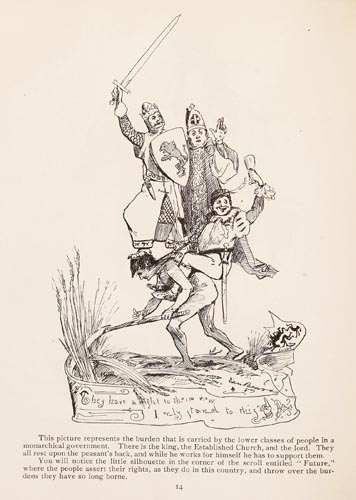

|  |
This picture represents the burden that is carried by the lower classes of people in a monarchical government. There is the king, the Established Church, and the lord. They all rest upon the peasant's back, and while he works for himself he has to support them. You will notice the little silhouette in the corner of the scroll entitled "Future," where the people assert their rights, as they do in this country, and throw over the burdens they have so long borne. |